Статистика
Данные сервис позовляет работать с данными из рекламных систем (Яндекс.Директ, Google AdWords), совмещать их с данными внешних источников (Google Analytics, Calltracking системы, CRM), а также применять определенные действия на основе этих данных. Статистика значительно упрощает работу с рекламными аккаунтами любых размеров.
Интерфейс статистики можно разбить на отдельные блоки, каждый из которых отвечает за определённый функционал
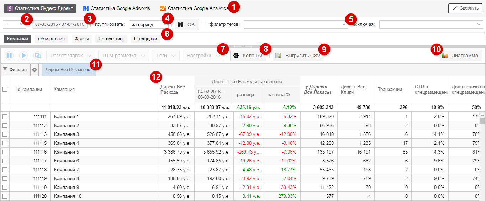
1Выбор сервиса
Вы можете переключаться между данными из различных систем. В данный момент вам доступны данные из систем Яндекс.Директ, Google AdWords. При необходимости вы можете посмотреть на системные таблицы других систем
Обратите внимание
Системные таблицы предназначены для внутренних целей и служать для отладки системы. Рекомендуется использовать статистику Яндекс.Директ и Google AdWords
2Валюта в отчетах
Вы можете выбрать валюту, с которой хотите работать в отчетах. При изменении валюты все финансовые метрики (Расход, Доход и их производные метрики) будут сконвертированы в текущую валюту по курсу ЦБ.
Обратите внимание
Изменение валюты также конвертируют настраиваемые метрики. Поэтому в некоторых случая возможен некорректный расчет метрики при изменении валюты (например, если ценность цели задана определённым числом в конкретной валюте)
По умолчанию данные представлены в валютах, указанных при подключении для каждой системы.
3Выбор пероида
Позволяет выбрать период, в рамках которого будут собраны данные. Также вы можете выбрать период для сравнения с текущим. Это позволит сравнивать данные на диаграмме и в отчетах (активируется из параметров колонки)
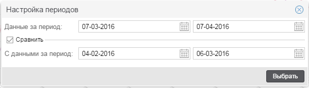
4Группировка данных
Данный параметр позволяет выбрать тип группировки по временным промежуткам: за период, по дням, по неделям, по месяцам, по годам.
Группировка влияет на отображение данных в таблице и на диаграмме.
5Фильтр тегов
Данная опция позволяет быстро выбрать нужные кампании для дальнейшей работы с ними. Предварительно необходимо назначить теги на выбранные кампании. Это можно сделать в отчете по кампаниям (см. кнопки действия)
6Выбор отчета
Для каждой рекламной системы доступны отчеты с разным уровнем детализации. Так, для Яндекс.Директа доступны отчеты на уровне кампании, объявлений, ключевых слов, ретаргетингов и площадок.
Для каждого отчета существуют необходимые параметры для сопоставления данных из внешних систем. Например, для отчета по площадкам директа необходимо наличие параметреров {campaign_id}, {source}, {source_type} в URL объявления. В противном случае будут доступны только данных из рекламной системы.
7Кнопки действия
Все отчеты позволяют выполнять определённые действия с рекламными объектами. Например, вы можете изменить ставку ключевого слова в соответствующем отчете (см. подробное описание кнопок в подробном описании отчетов).
8Колонки
Данная кнопка вызывается в меню, из которого можно выбрать необходимые колонки для отчета. В зависимости от подключенных рекламных систем и внешних источников сбора данных, вам могут быть доступны параметры из следующих разделов:
Измерения рекламной системы
Неизмеряемые параметры рекламных систем. Например, id кампании и url объявления являются измерениями рекламной системы.
Метрики рекламной системы
Измеряемые параметры рекламных систем. Например, расход и клики являются метриками рекламной системы
Метрики системы аналитики
Измеряемые параметры системы аналитики (Google Analytics или Яндекс.Метрика). Например, сеансы и транзакции являются метриками систем аналитики.
Метрики CRM, Calltracking
Измеряемые параметры, полученные из CRM и систем учета звонков (подключаются через Учет звонков и заказов). Например, доход от заказов, количестов завершённых сделок являются метриками CRM.
Пользовательские метрики
Метрики, вычисленные на основе доступных метрик из всех систем. Например, можно создать метрику "Стоимость заказа", после чего она будет доступна в данном разделе.
Создать метрику можно в разделе Настраиваемые метрики
Добавление метрики в отчет
Для добавления метрики достаточно дважды кликнуть по ней в окне со списком метрик либо перетащить её в список видимых метрик, зажав левую кнопку мыши. Аналогичным образом можно убрать из отчета лишние колонки.
Поиск параметров из списка
При необходимости вы можете быстро найти требуемый параметр по его названию.
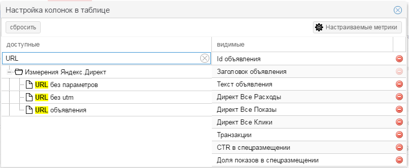
Обратите внимание
Ваш текущий набор колонок сохраняется в параметрах URL. Это значит, что вы можете поделиться ссылкой с коллегами, которые при переходе увидят тот же отчет с тем же набором колонок.
9Выгрузка в CSV
Вы всегда можете выгрузить данные в формате CSV для дальнейшей обработки с помощью своих инструментов.
Вам доступно несколько вариантов выгрузки статистики.
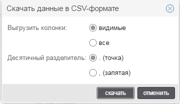
| Опция | Описание |
|---|---|
| Выгрузить колонки | Определяет колонки, которые следует выгрузить. Возможные варианты: видимые (выгружает только добавленные в отчет колонки) и все (выгружает все доступные для данного отчета колонки) |
| Десятичный разделитель | Определяет разделитель, который будет использован для десятичных дробей. Возможные варианты - точка и запятая. Данная опция может влиять на отображения данных в определённых инструментах. |
10Диаграмма
Все метрики, доступные в отчетах, можно отобразить на диаграмме. Данный инструмент полезен для оценки динамики рекламных показателей системы. Также возможна выгрузка диаграмм в различных форматах.
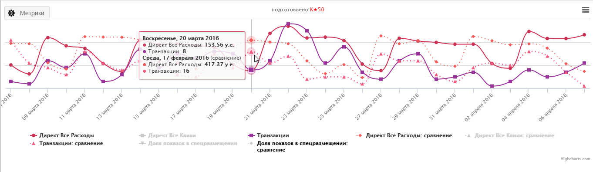
При активации сравнения периодов также будут отображаться метрики за прошлый период.
Обратите внимание
Диаграммы отображаются для общих данных после применения всех фильтров и группировок. Это значит, что для отображения данных по одной кампании следует отфильтровать в отчете остальные.
11Фильтры
Данный инструмент позволяет отобразить только данные, удовлетворяющие определённому критерию. Например, можно отобразить только фразы с высокой стоимостью заказа и продолжить работу с ними.
Для создания фильтра необходимо нажать на кнопку Фильтры, расположенной под кнопками действия:
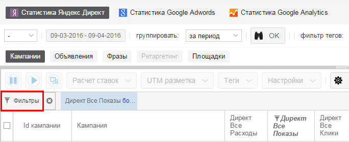
Также возможно добавление фильтра неспосредственно из параметров определённой колонки:
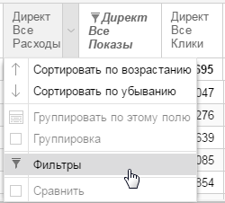
При добавлении фильтра появится окно, в котором следует выбрать параметр для фильтрации и задать условия фильтра
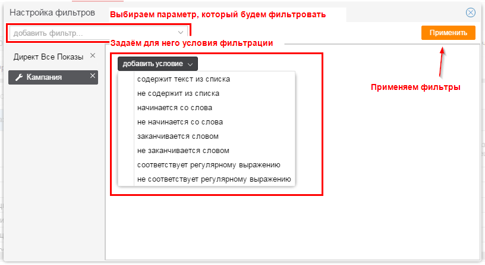
После назначения всех фильтров следует нажать кнопку Применить.
Обратите внимание
При наличии нескольких фильтров подразумевается, что данные должны удовлетворять всем фильтрам одновременно.
Все активные фильтры будут отображаться на панели под кнопками действия, из которой можно запустить их редактирование, кликнув по определённому фильтру, либо убрать все фильтры, нажав на
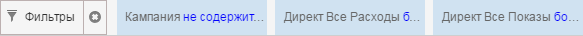
Обратите внимание
Выбранные фильтры сохраняются в параметрах URL. Это значит, что вы можете поделиться ссылкой с коллегами, которые при переходе увидят тот же отчет с тем же набором фильтров.
12Параметры колонки
У каждой колонки есть собственное меню, из которого можно выполнить определённые действия. Для этого необходимо навести курсор на заголовок колонки и нажать на кнопку, возникшую справа от её заголовка.
Доступны следующие действия.
Сортировка
Сортирует отчет по данным из выбранной колонки. Соритровка может быть вызвана кликом по заголовку колонки.
Группировка
Позволяет группировать данные по заданной колонке. Данная функция полезна, например, при оценке эффективности объявлений внутри одной группы. Доступна только для измерений.
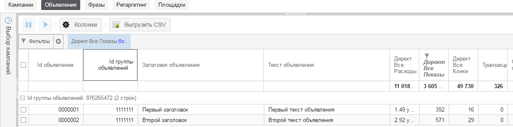
Сравнение данных с предыдущим периодом
Позволяет сравнивать данные за текущий период с данными за любой другой период. Данная функция доступна только для метрик и только при выбранном периоде для сравнения (см. настройки периода).
При активации сравнения для параметра появятся 3 дополнительных столбца: данные по параметру за период сравнения, абсолютная разница между параметрами, относительная разница между параметрами (в %)
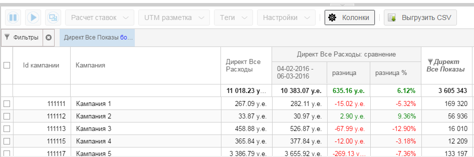
Обратите внимание
Данные колонки можно точно так же фильтровать и сортировать. Это значит, что вы можете построить отчет по фразам, у которых вырос расход больше чем на 40% по сравнению с прошлой неделей.